Task 1 · 5 steps
Search for "Sandwich" and add an item to cart
Open the Uber Eats app
Screen: Home feed
Friction points & heuristic issues
Home screen launches with clear hierarchy — address, category chips, and featured restaurants are immediately visible. No heuristic violations. The fee disclaimer banner introduces a cautionary tone but does not block action.
Cognitive load
User simply opens the app. No decision-making required. Familiar food-delivery layout minimises the learning curve.
Error prevention
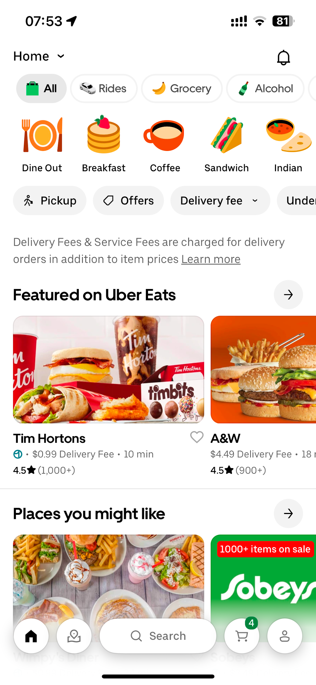
Tap search bar and type "sandwich"
Screen: Search input + autocomplete
Friction points & heuristic issues
Search lives in the bottom navigation bar, not at the top where most food-delivery apps position it. A "Sandwich" category chip is already visible on the home feed — users may tap that instead of the search bar, diverging from the happy path. The keyboard displays Chinese labels ("搜索", "空格"), a localization inconsistency that creates minor visual noise.
Cognitive load
Dual affordances (category chip vs. search bar) create a minor decision point before the user can proceed.
Error prevention

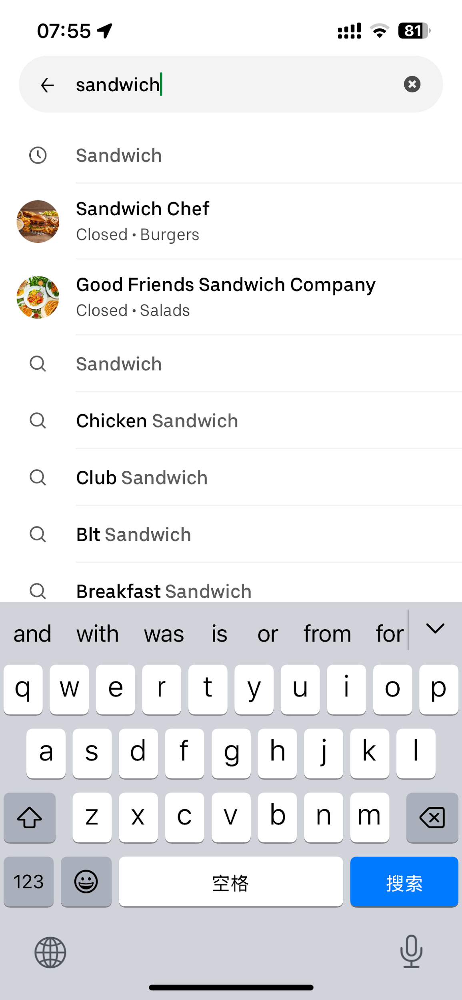
Select a restaurant from results
Screen: Search results list
Friction points & heuristic issues
Inline item previews (Clubhouse CA$16.20, Druxy's Famous Reuben CA$20.40) appear before the user selects a restaurant, blurring the list/menu boundary. The prominent "Buy 1, get 1 free" badge nudges users toward a promotional decision before they've chosen a restaurant. McDonald's carries a "Most popular" badge despite a lower rating (4.2) than Williams Fresh Cafe (4.5), creating a trust inconsistency.
Cognitive load
User must scan ratings, delivery fees, ETAs, and promo badges simultaneously while deciding whether to engage with inline item cards or the restaurant row itself.
Error prevention
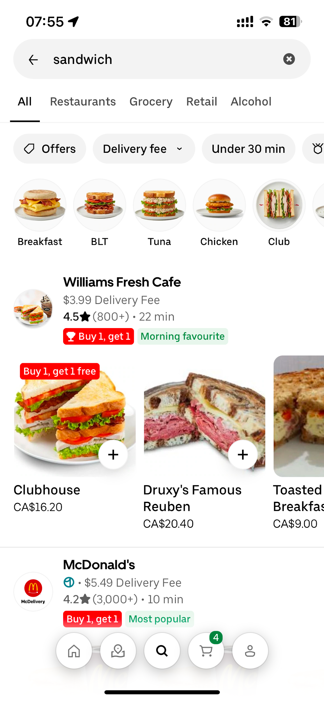
Browse menu and tap a sandwich item
Screen: Restaurant page (bottom sheet) + item detail
Friction points & heuristic issues
The restaurant opens as a bottom sheet modal, placing fee info and the Delivery/Pickup toggle above the menu — the primary goal is buried. The BOGO section is the first content block. Item descriptions are truncated with no "read more" affordance — a concern for users with dietary restrictions. Customisation options use internal shorthand codes ("BGL Everything", "CHS Cheddar 2 slices") violating real-world language expectations.
Cognitive load
Layered decisions: promo mechanics, service info, truncated descriptions, and cryptic customisation labels compound sequentially.
Error prevention
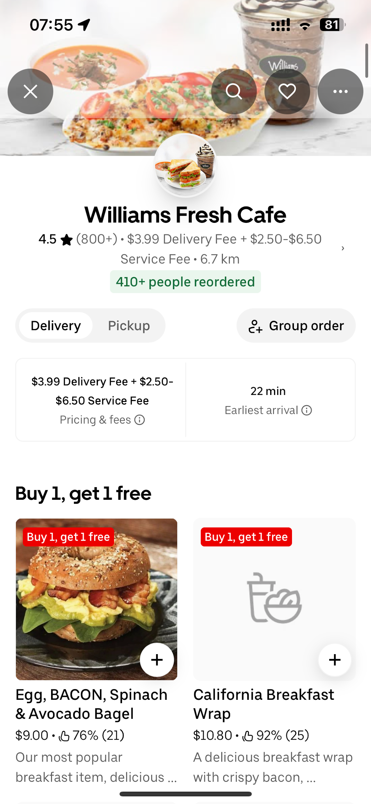
Tap "Add to cart"
Screen: Item detail CTA + cart view
Friction points & heuristic issues
The CTA reads "Add 2 · $9.00 $18.00" — quantity 2 is pre-set by the BOGO promotion without explicit user consent or inline explanation. The dual-price display in one compact button is visually dense. "Saving $9 with promotions" only appears after adding — not before — removing pre-commitment transparency. An upsell carousel in the cart introduces distraction at the point of commitment.
Cognitive load
Core action is simple, but surrounding quantity and pricing information requires extra parsing before the user can commit confidently.
Error prevention
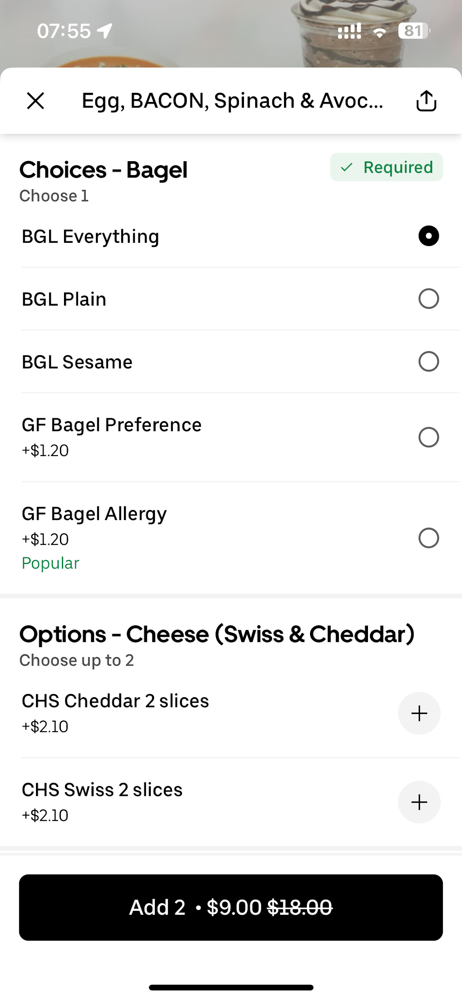
Task 1 — Overall assessment
Overall cognitive load
2.2 / 5
Avg across 5 steps
Steps at PURE 2+
4 / 5
Moderate friction dominant
Heuristic violations
6
H1, H2, H4, H5, H7, H8
Friction trajectory
Primary friction points (ranked)
Task 2 · 7 steps
Change payment method, set a custom tip, and verify the final total
Tap "View cart" to navigate to cart page
Screen: Cart summary (Williams Fresh Cafe)
Friction points & heuristic issues
The cart screen clearly displays the selected item, quantity stepper, promotion badge, and "Go to checkout" CTA. The "Offers for you" upsell carousel is visible but does not block the primary path. "Saving $9 with promotions" banner provides a positive transparency signal.
Cognitive load
The user is returning to a state they already created. Recognising their item and tapping the clear CTA requires minimal effort.
Error prevention
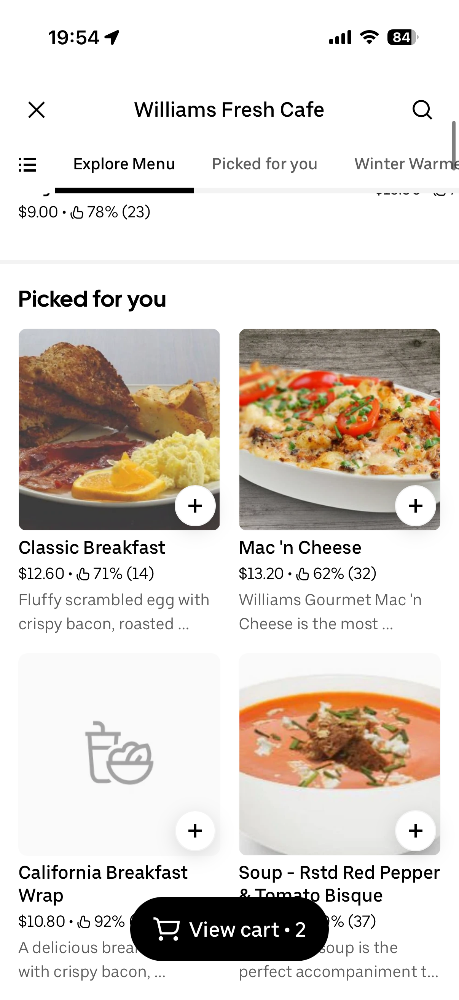
Tap "Go to checkout"
Screen: Cart → Checkout transition
Friction points & heuristic issues
"Go to checkout" is a prominent full-width black CTA pinned to the bottom of the screen. Label is unambiguous and action-oriented. No heuristic issues at this step.
Cognitive load
Single, obvious action. No competing affordances at the bottom of screen.
Error prevention
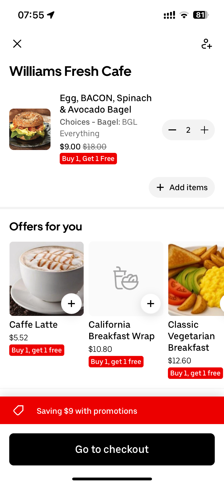
Tap "No thanks" to dismiss upsell
Screen: "Complete your order" interstitial
Friction points & heuristic issues
An interstitial upsell screen intercepts the checkout flow with 6+ add-on items. The dismiss action "No thanks" is a socially loaded phrase that introduces mild guilt-inducing friction (confirmshaming). The screen does not display the user's current order total, removing contextual grounding right before payment. No progress indicator shows how many checkout steps remain.
Cognitive load
User must scan 6 upsell items, resist social pressure, and re-orient to their goal of changing payment method.
Error prevention
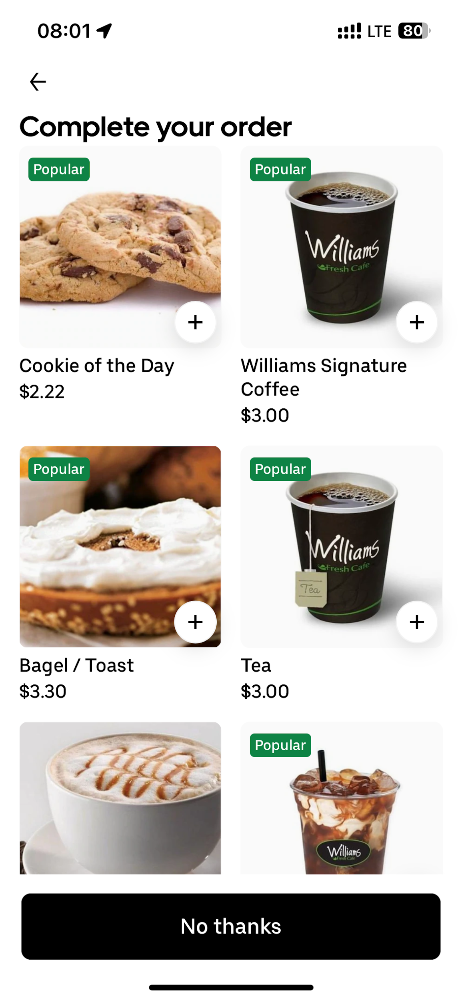
Tap currently selected payment method
Screen: Checkout summary → Pay with modal
Friction points & heuristic issues
The checkout screen shows "Apple Pay" as a summary row with a right chevron, suggesting it is tappable. However, this interaction — tapping a list row to open a full payment modal — is not clearly signalled. Users accustomed to a dedicated "Change" or "Edit" button may overlook it. A partially cut-off courier upsell banner at the top competes with the order summary.
Cognitive load
User must infer the payment row is tappable to edit rather than being given a clear affordance.
Error prevention

Select a different payment method
Screen: "Pay with" modal
Friction points & heuristic issues
The "Pay with" modal lists two identical entries labelled "Apple Pay" — no distinguishing detail (last 4 digits, card type, default badge). The Personal/Business toggle adds unexpected complexity. "Uber Cash: $0.00" draws attention to an empty wallet. No confirmation feedback is provided when a method is selected.
Cognitive load
User must interpret duplicate labels, decide between Personal/Business, assess Uber Cash balance, and confirm selection — all in one unguided modal.
Error prevention
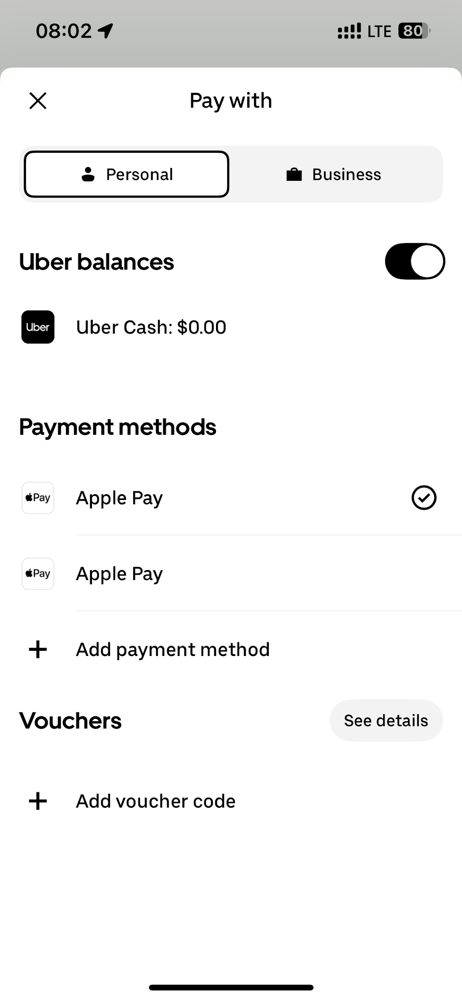
Tap "Next" to proceed to tip page
Screen: Checkout summary → Add a tip
Friction points & heuristic issues
"Next" is a clear full-width CTA. The checkout summary provides a well-structured cost breakdown. Minor: the CTA label "Next" is generic — "Proceed to tip" would better set expectations.
Cognitive load
The cost breakdown is clear and well-structured. The user simply reads the total and taps forward.
Error prevention
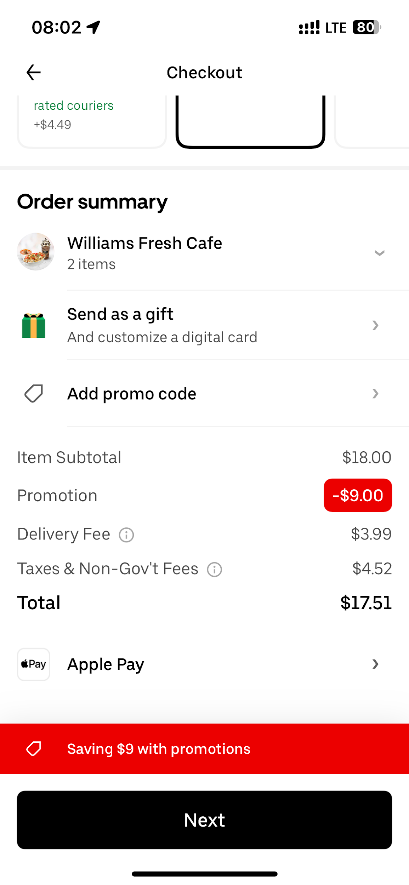
Tap "Edit", enter custom tip, verify final price Key step
Screen: "Add a tip" → custom amount input → final total
Friction points & heuristic issues
The tip screen uses emotionally loaded labels — "Cheers to you (15%)", "You're great (18%)", "You're my hero (25%)" — nudging users toward higher tips with positive identity language. The 18% option is pre-selected, exploiting anchoring bias.
System status visibility failure — special focus
When the user taps "Edit" and enters a custom amount (e.g. $4.00), the "Order total" on the input screen reads $17.51 — the food + fees subtotal only, excluding the tip. The all-in grand total (food + fees + tip) is never shown. After tapping "Save," only "Your tip: $4.00" appears — with no running grand total. The user must mentally add $17.51 + $4.00, with no app confirmation. This directly breaks the core task goal of verifying the total price — a serious violation of H1.
Cognitive load
User must resist pre-selected nudges, interpret loaded labels, and manually perform mental arithmetic to determine true final charge — without any UI confirmation.
Error prevention
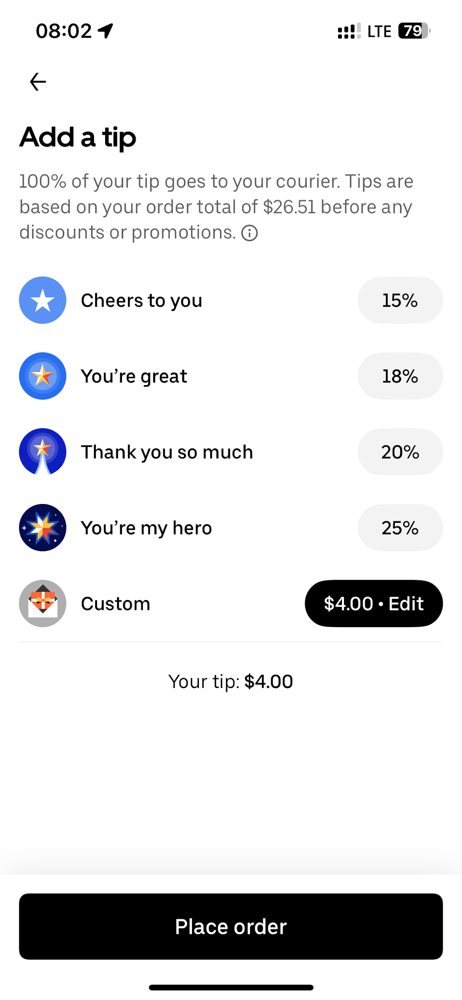
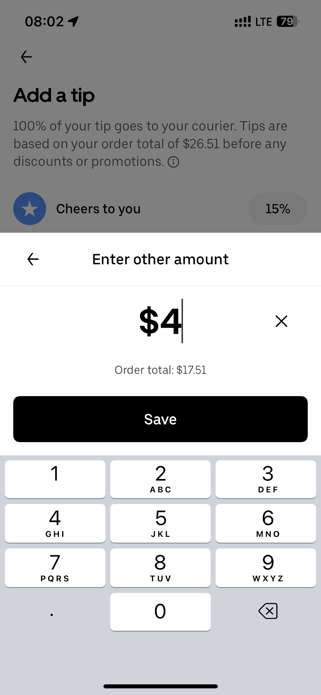
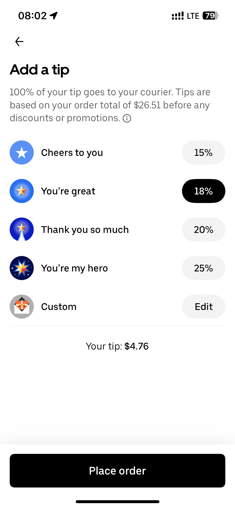

Task 2 — Overall assessment
Overall cognitive load
2.0 / 5
Avg across 7 steps
Steps at PURE 2+
5 / 7
1 step reaches PURE 3
Heuristic violations
7
H1, H2, H3, H4, H5, H6 affected
Friction trajectory
Primary friction points (ranked)
Task 3 · 5 steps
Find customer service and locate a support phone number
Locate and tap the Account icon on the Home screen
Screen: Home feed — bottom navigation bar
Friction points & heuristic issues
The Home feed is the starting point. The bottom navigation bar contains 5 icons: Home, Account (person silhouette), Search, Cart, and a second person-shaped icon. The Account icon's label is not persistently visible — icons rely on shape recognition alone with no text labels below them. For a distressed user in a hurry, the distinction between the two person-shaped icons may cause brief hesitation. Critically, there is no "Help" or "Support" shortcut anywhere on the Home screen — the user must first identify the Account icon as the indirect gateway to support.
Navigation entry point
A user seeking customer service must correctly identify the Account icon as the path to Help — an indirect route that is not signposted from the Home feed. No shortcut or contextual help entry point exists on the most-visited screen in the app.
Cognitive load
Tapping a bottom nav icon is a well-established mobile pattern requiring minimal effort. The absence of persistent text labels is a minor overhead, but the action is quick and familiar for most smartphone users.
Error prevention

Locate "Help" on the Account profile page and tap it
Screen: Account profile page → Help hub
Friction points & heuristic issues
The Account profile page loads a flat, heterogeneous list of 9+ items with no visual grouping: quick-action shortcuts (Favourites, Wallet, Orders), a "Try Uber One free" promotional banner, and a long feature list (Family and teens, Rides, Promotions, Send a gift, Help, Saved groups, Set up your business profile, Partner Rewards). "Help" is the 5th item in this list, visually equal to commercial and non-support entries. The Uber One promotional banner sits above Help, further pushing it down the hierarchy. There is no dedicated support section, no icon differentiation, and no priority signal to guide a distressed user directly to Help.
Discoverability concern
Most users in distress expect a dedicated "Support" or "Contact Us" path — not a generic profile page where Help competes equally with "Rides," "Promotions," and "Partner Rewards." The promotional banner occupying the space above Help actively deprioritises the support entry point.
Cognitive load
The user must scan a flat list of 9+ mixed-purpose items to locate "Help." The presence of commercial items (Uber One, Partner Rewards) alongside support items increases visual noise for a user already stressed about an order problem.
Error prevention
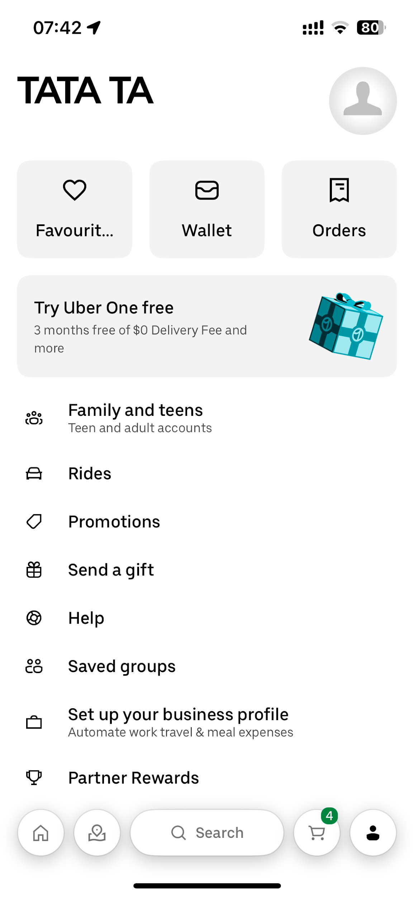
Navigate the Help hub and tap the last order
Screen: Help hub — Restaurants / Stores tabs + Last Order card
Friction points & heuristic issues
The Help hub opens with an "Ongoing chat with Uber Support" banner at the top — implying an active session may already exist, which is confusing for a user who has not recently chatted. The "Restaurants" and "Stores" tabs require the user to classify their issue type before proceeding — an unnecessary pre-screening step. The "Last Order" card (Domino's Pizza, Apr 30, CA$31.71) is surfaced directly and is a genuinely strong UX shortcut. However, there is no visible "Talk to a person," "Call us," or "Live chat" option anywhere on this screen — human escalation is architecturally invisible at the hub level.
Human agent visibility
A user scanning this screen for a phone number or live chat button will find nothing. The only forward paths are the AI chatbot or topic category lists. Human escalation is not offered as an option at any visible point on this screen.
Cognitive load
Three micro-decisions before any support interaction begins: classify context (Restaurants vs. Stores), assess the existing chat state, identify the correct order or topic to tap. The Last Order shortcut reduces one decision, but the banner and tab overhead remain.
Error prevention
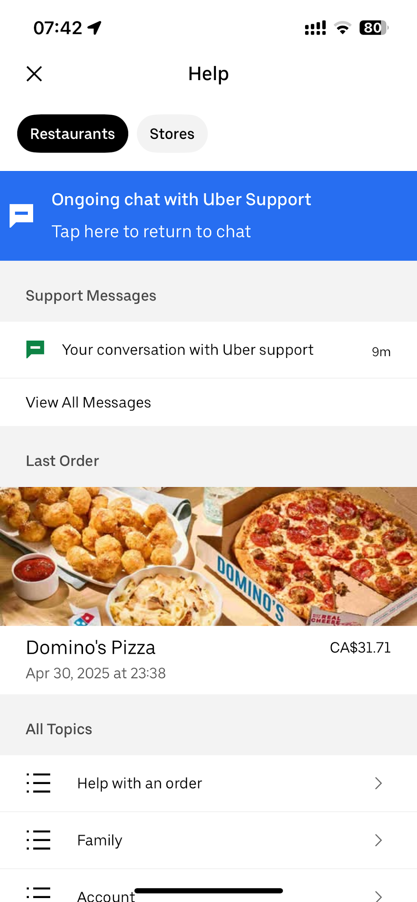
Select an issue category — e.g. "Another order issue"
Screen: Order issue category list → AI chatbot (topic-routed)
Friction points & heuristic issues
Selecting a category opens the AI chatbot presenting near-duplicate issue chips — creating a disorienting sense of circular navigation. The chatbot header reads "Powered by AI" in 12px subdued text: the only indicator this is not a human. No free-text input box, no "Skip to agent" option, and no phone number exists — all paths are gated behind chip selection.
Chatbot containment architecture
The system is designed to maximise automation and minimise human agent contact. Every available path routes through the AI decision tree. This is a deliberate support-suppression strategy, not an oversight.
Cognitive load
User must recognise the duplicate menu, understand they are inside an AI system from minimal signposting, and begin processing that direct human contact may not be possible — all while managing frustration over a real order issue.
Error prevention
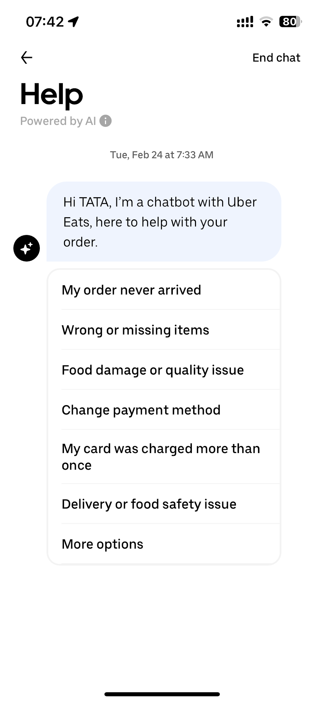
Attempt to reach a human agent or find a phone number Critical failure point
Screen: Chatbot — "More options" branch / free-text attempt
Friction points & heuristic issues — deep analysis
This step represents a complete architectural dead end. The task goal — reaching a human agent or finding a customer service phone number — is structurally unachievable within the app.
No phone number exists anywhere in the app
Uber Eats does not publish a customer service phone number in-app. A user whose primary goal is direct phone contact will exhaust every screen in this flow, find nothing, and be forced to leave the app entirely. This is a deliberate cost-reduction strategy — the app funnels 100% of support contacts through the chatbot.
No free-text input — "human" bypass is impossible
The chatbot presents only pre-defined chip options. The happy path step of typing "human" cannot be executed because no text box exists at this stage. Every chip routes deeper into automation, never toward a human agent.
"More options" is a dead-end branch
Tapping "More options" surfaces additional issue categories — not a "Talk to a person," "Call us," or "Request a callback" option. The resolution tree is finite and loops back to the same automation with no guaranteed human escalation path.
Emotional design failure
The support flow uses a cold, transactional chip-only interface with no empathy signalling — no acknowledgement of inconvenience, no "we're sorry this happened," no estimated resolution time. The emotional register is entirely mismatched to a user's distressed state.
Error prevention
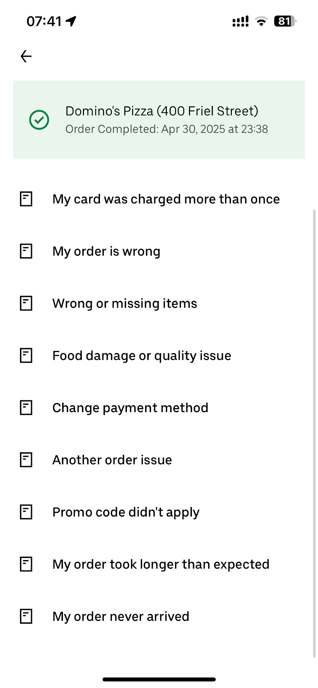
Task 3 — Overall assessment
Overall cognitive load
3.0 / 5
Highest avg across all tasks
Steps at PURE 2+
4 / 5
1 step reaches PURE 3
Heuristic violations
8
H1, H3, H4, H5, H6, H7, H9, H10
Frustration trajectory
User emotional state as path narrows toward a dead end
Friction trajectory
Primary friction points (ranked)
Emotional design failures
No empathy signalling
Neutral, transactional chip UI with no acknowledgement that something went wrong.
AI label buried
"Powered by AI" shown in 12px subdued text — users may believe they are talking to a human.
Issue categorisation language
Plain language labels are the one emotionally considerate element, reducing friction of problem framing.
Dead end with no exit
No "We can't help further in-app — here's what to do" message. User is simply blocked.
Cross-task analysis
Uber Eats — Evaluation summary
Overall metrics
Total steps evaluated
17
Across 3 tasks
Steps at PURE 2+
13 / 17
76% moderate or higher
Steps at PURE 3
3 / 17
Critical failures
Task comparison
| Task | Steps | Avg cognitive load | PURE 2+ steps | PURE 3 steps | Heuristic violations |
|---|---|---|---|---|---|
| Task 1 — Search & Add to cart | 5 | 2.2 / 5 | 4 / 5 | 0 | 6 (H1, H2, H4, H5, H7, H8) |
| Task 2 — Payment & Tip | 7 | 2.0 / 5 | 5 / 7 | 1 (Step 7) | 7 (H1, H2, H3, H4, H5, H6) |
| Task 3 — Customer Support | 5 | 3.0 / 5 | 4 / 5 | 1 (Step 5) | 8 (H1, H3, H4, H5, H6, H7, H9, H10) |
| Combined | 17 | 2.4 / 5 | 13 / 17 | 2 critical | 9 unique heuristics violated |
Severity-ranked findings across all tasks
Systemic design patterns identified
Conversion over clarity
Promotional mechanics (BOGO, upsells, pre-selected tips) appear at every major decision point across all 3 tasks, consistently prioritising revenue over task focus.
Support suppression
The entire customer support architecture is designed to eliminate live agent contact. This reduces costs but creates maximum frustration for users with unresolvable issues.
Status transparency failures
H1 (Visibility of system status) is violated in all 3 tasks — from ambiguous cart quantities to missing grand totals to absent phone numbers.
Emotional asymmetry
Warm, identity-positive language is used to drive spending (tip labels). Cold, transactional language is used in support flows where empathy would reduce abandonment.
AI-Simulated Think-Aloud · SEQ Rating · Gemini Thinking · March 19 2026
User Testing Session — Alex
Alex — Simulated Participant
A time-pressured professional with approximately 40 minutes remaining on a lunch break at the start of the session. Motivated by speed and efficiency — wants to complete tasks quickly without distractions. Familiar with food delivery apps but not a power user.
SEQ Scores at a glance
Task 1 — Search & Add
6 / 7
Very Easy
"Very straightforward — BOGO was clearly labeled, though the required customisation felt like a tiny speed bump."
Task 2 — Payment & Tip
4 / 7
Slightly Difficult
"Navigating through an upsell page and a separate tipping flow felt tedious when watching the clock."
Task 3 — Customer Support
2 / 7
Extremely Difficult
"The app hides direct contact behind layers of automated menus and AI chatbots — the last thing I want in a hurry."
Think-aloud transcript
Researcher note — PURE vs SEQ alignment
Alex's SEQ of 6 aligns with the PURE evaluation's finding of consistent moderate (PURE 2) friction — no catastrophic failure, but multiple micro-frictions. Notably, Alex independently noticed the abbreviated label "BGL Everything" as a friction point, corroborating the PURE Step 4 finding. Alex also navigated the pre-set quantity of 2 without objection, suggesting the BOGO framing was legible enough for a motivated, time-pressured user — but may be more problematic for less engaged users.
Think-aloud transcript
Researcher note — PURE vs SEQ alignment
Alex's SEQ of 4 is consistent with the PURE evaluation's finding of a single PURE 3 step (Step 7) dragging down an otherwise moderate-friction task. Two key PURE findings were directly echoed in the think-aloud: (1) the tip base calculated on the pre-discount total ($26.51 vs $17.51) caused visible confusion — Alex called it "a bit annoying", validating the H1 violation; (2) the difficulty locating the payment change affordance confirms the H6 / discoverability finding from PURE Step 4. Critically, Alex never received a confirmed all-in total before placing the order, exactly as predicted by the PURE Step 7 analysis.
Think-aloud transcript
Researcher note — PURE vs SEQ alignment
Alex's SEQ of 2 is the strongest validation of the PURE evaluation across all three tasks. The think-aloud directly surfaces the same architectural dead end identified in PURE Step 5: no phone number, no free-text bypass, no human escalation path. Alex's unprompted observation — "it feels like the app is hiding a phone number on purpose" — independently identifies the deliberate support-suppression strategy flagged in the PURE analysis. The emotional trajectory also matches exactly: mild frustration at step 2 (chatbot barrier), escalating to task abandonment by step 5 as the clock ran out. The PURE analysis predicted maximum frustration; the think-aloud confirmed it verbatim.
PURE evaluation vs user testing — alignment summary
Task 1 alignment
PURE predicted moderate friction (avg 2.2). SEQ returned 6/7. Motivated users navigate BOGO mechanics successfully — friction is real but surmountable. PURE correctly identified "BGL" labels and pre-set quantity as the key friction points, both surfaced in the think-aloud.
Task 2 alignment
PURE predicted a PURE 3 failure at Step 7 (no grand total shown). SEQ returned 4/7. Alex confirmed the tip base confusion ($26.51 vs $17.51) and the payment edit discoverability issue — both predicted by PURE Steps 4 and 7.
Task 3 alignment
PURE predicted an architecturally impossible goal (PURE 3, CL 5). SEQ returned 2/7 — the lowest score across all tasks. Alex independently concluded the app deliberately hides contact info, exactly matching the PURE "support-suppression" finding.